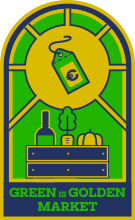

some call them terroirists. some call them the punks of wine. we just drink it.
natural wine festival amsterdam
united by wine


Verzy, Champagne. Third generation.
A guided tasting for beginners. Six wines, six stories. No jargon, no pretension. Just the glass and the person who made it.


some call them terroirists. some call them the punks of wine. we just drink it.

€39.95. Chef Ian Veuger. Family style.